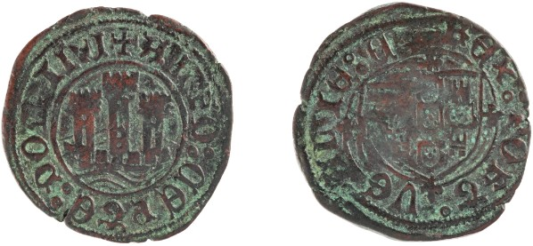
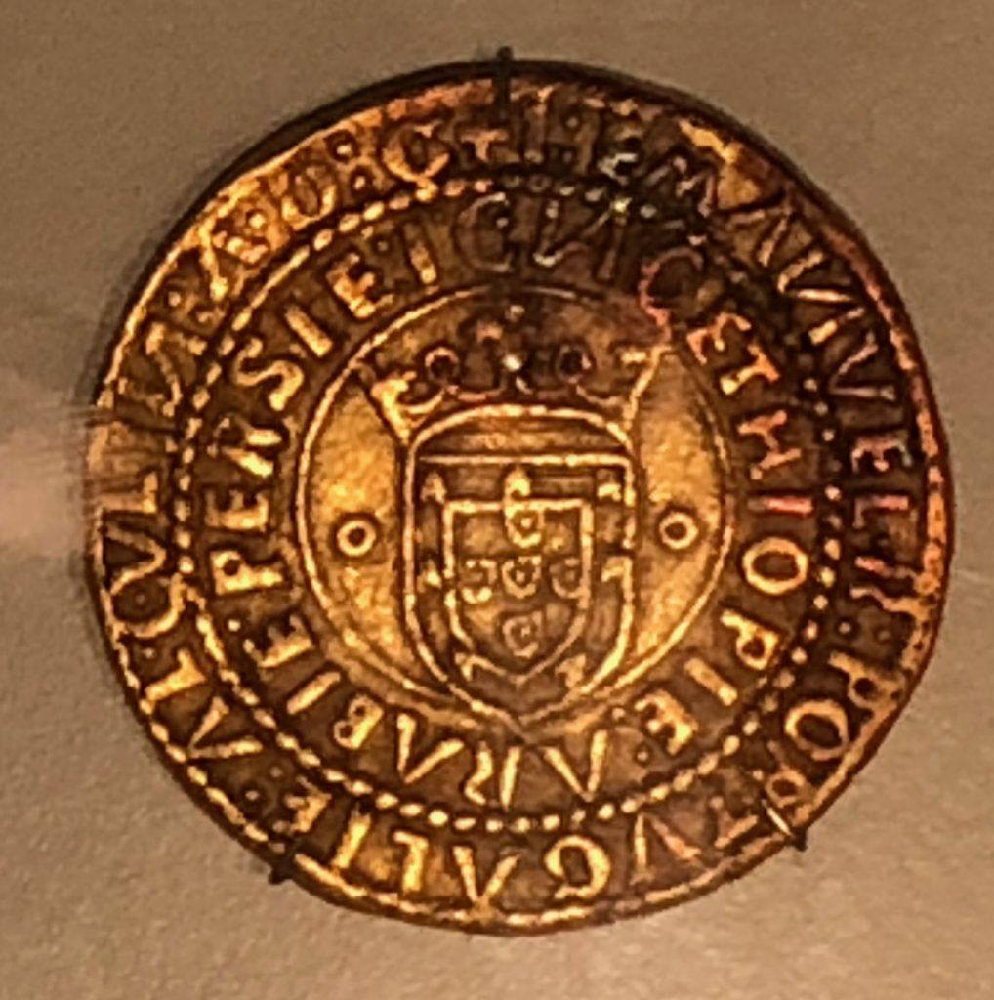

Este é um dos ceitis de D. Afonso V mais bem compostos da colecção do Museu da Casa da Moeda. Já pertencia a D. Luiz e mostra, no letreiro. a titulatura de Senhor de Ceuta (CEPTE DOMINI). Tem uma epigrafia certamente…
Arquivo Digital de Investigação em Numismática Medieval Portuguesa
Categoria
2 publicações

Este é um dos ceitis de D. Afonso V mais bem compostos da colecção do Museu da Casa da Moeda. Já pertencia a D. Luiz e mostra, no letreiro. a titulatura de Senhor de Ceuta (CEPTE DOMINI). Tem uma epigrafia certamente…

Uma exposição de uma colecção privada, que ocorreu em 2019, no Brasil. Há um português de D. Manuel e muito ouro mecânico. Alguém sabe alguma coisa sobre a colecção? moedas raras estao expostas em uma das maiores…